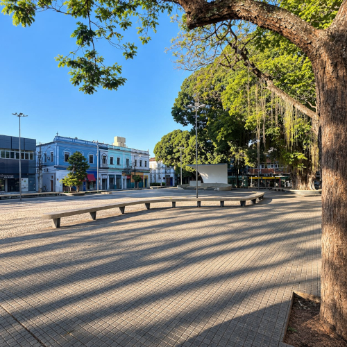

PRAÇA RUI BARBOSA
Agora iremos conhecer um pouco mais sobre o modernismo de Cataguases com a praça Rui Barbosa, uma praça de grande importância para o modernismo de Cataguases.
-
Luzimar Telles e Cataguases: Luzimar Natalino Cerqueira de Góes Telles nasceu em 25 de dezembro de 1920, em Fortaleza (CE), e morreu em 18 de dezembro de 2001. Passou parte da juventude no Rio de Janeiro e estudou Arquitetura, tornando-se um importante arquiteto modernista. Por volta de 1948/1949, chegou a Cataguases, onde desenvolveu grande parte de sua carreira. Projetou mais de 100 residências, além de obras como o Fórum, o Banco do Brasil, o Hospital de Cataguases e a Associação Atlética do Banco do Brasil. Uma de suas obras importantes foi a reformulação da Praça Rui Barbosa, em 1957. O projeto trouxe elementos modernos, como bancos curvos revestidos de pastilhas e desenhos geométricos no piso. O arquiteto Francisco Bolonha também participou do projeto, criando a famosa concha acústica. Luzimar foi, portanto, um dos arquitetos que mais contribuíram para tornar Cataguases uma referência da arquitetura moderna brasileira.
-
Modernismo da Praça Rui Barbosa: A Praça Rui Barbosa, em Cataguases, é um importante exemplo do Modernismo brasileiro. Reformulada em 1957 pelo arquiteto Luzimar Telles, ela trouxe para o centro da cidade uma aparência mais moderna, com bancos curvos revestidos de pastilhas, piso de pedras portuguesas com desenhos geométricos e espaços mais abertos. Um dos maiores destaques é a concha acústica, projetada por Francisco Bolonha, que substituiu o antigo coreto. Sua forma curva de concreto e sua composição geométrica mostram a preocupação modernista com formas simples, funcionalidade e inovação. O mais interessante é que a praça não rompeu totalmente com a história de Cataguases: o novo projeto modernista respeitou o antigo traçado da praça, criando uma mistura entre o passado e a arquitetura moderna.
-
O que transmite o estilo modernista?: O que mais transmite essa sensação é a combinação de curvas, formas geométricas, espaços abertos, poucos elementos decorativos e materiais modernos, criando uma aparência limpa, funcional e diferente das praças tradicionais. Formas geométrica: mosaicos com desenhos geométricos no piso; bancos longos e curvos; concha acústica com formas curvas e semicírculos; composição com formas simples e bem definidas. Materiais: pedras portuguesas e ladrilhos hidráulicos no piso; Pastilhas nos bancos; concreto armado na concha acústica.
-
Importância do patrimônio histórico e cultural de Cataguases: O que representa para a cidade: representa a história, a cultura e a identidade de Cataguases, além de ser um símbolo do Modernismo, um espaço de convivência da população e um local de encontros comerciais.
-
Principais problemas: Necessidade de conservação e manutenção dos elementos arquitetônicos e do espaço público.
-
Principais características: Bancos curvos revestidos de pastilhas; calçamento de pedras portuguesas com desenhos geométricos; concreto em formato de concha acústica; elementos arquitetônicos modernistas.